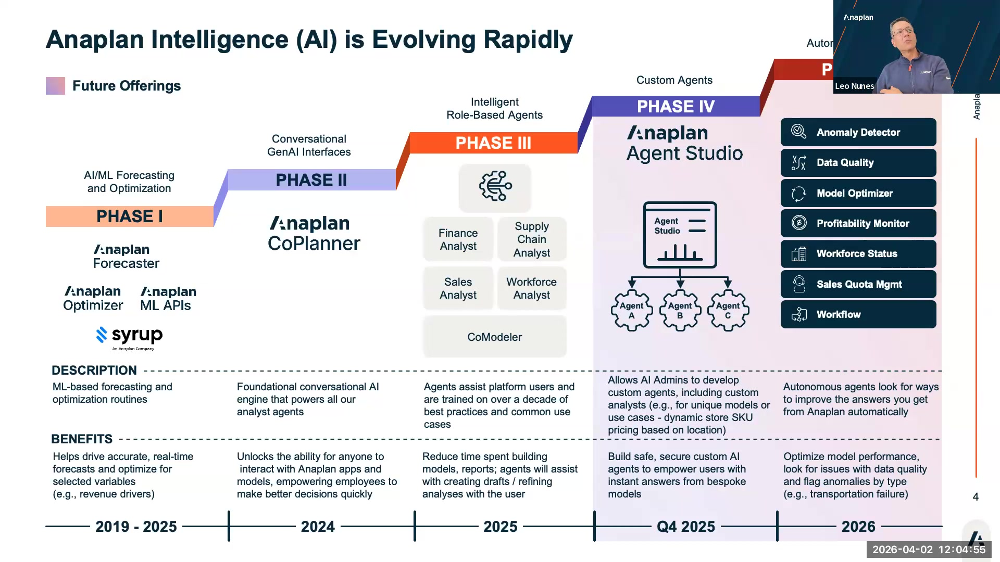

Workshop Overview
Anaplan AI journey, GA vs roadmap, token usage, learning path
Anaplan's AI Journey
Anaplan has been building toward connected, intelligent planning since 2018. Leo Nunes walked the partner cohort through the full timeline in the April 2, 2026 kickoff. Here is the arc:

Anaplan AI evolution slide from Leo's April 2, 2026 session — Phase I through Agent Studio
The Anaplan Machine Learning APIs (bring-your-own model) are roadmap only as of April 2026. Leo flagged this explicitly — the slide in the onboarding deck incorrectly marks it as "Phase 1" rather than roadmap. Do not promise this to customers.
GA Products — What You Can Sell and Deliver Today
| Product | What It Is | Who Uses It | Status |
|---|---|---|---|
| CoModeler | AI model-building assistant — creates, extends, documents, and checks health of Anaplan models | Model builders, TCs, SAs | ✅ GA |
| Agent Studio | Admin control plane for all Anaplan AI — configure analysts, control workspace access | Tenant admins, AI admins | ✅ GA |
| Custom Analyst | Configurable conversational AI for end users — natural language queries against Anaplan data | End users, business users | ✅ GA |
| Anaplan Analysts (Finance, WFP, SC, Sales) | Pre-built analysts for specific functions | End users in respective domains | ✅ GA |
| Forecaster (PlanIQ) | Statistical forecasting engine | Supply chain, FP&A | ✅ GA |
Token Usage
As of April 2026, Leo confirmed that tokens are not being counted for partner tenants. The product team is not billing or throttling partner usage. This is the right time to experiment extensively.
Use this window to run all three CoModeler labs, build at least one Custom Analyst configuration, and export documentation from a real model. Build your prompt library now while there are no token constraints.
Learning Path
This workshop is structured as a self-contained enablement path. Follow the modules in order for the first pass. After that, use the reference pages (Limitations, Roadmap, Q&A) as standing references during customer engagements.